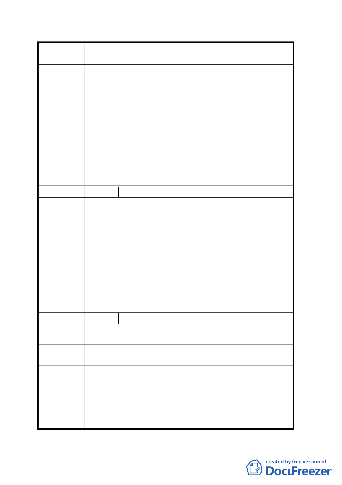

案 名 修訂台北市士林官邸特定商業區細部計畫案
法』，能有所善意回應及正面答覆。並要求市府報請
行政院協商，要求財政部對本案『受害陳情人』衍
生之遺產稅，予以免稅。協助『受害陳情人』解決
遺產稅問題。且承辦人明顯違反公務員服務法，請
求予以調查。盼與市府共仰台北的天空。
一、有關遺產稅之課徵非屬都市計畫範疇，請另依程序協
專案小組結
論
調處理。
二、有關本計畫案容積相關規定，同意維持原基本容積 225
％，加之以其他容積獎勵方式處理。
三、有關區段徵收及工程事宜請地政處妥為處理。
委員會決議 同專案小組審查結論。
編 號 7 陳情人 鄭芳瑞
避免市政府有圖利特定財團之嫌，抽籤前後有區塊劃分之
陳 情 理 由 嫌，抽籤前後區塊劃分有兩種不同版本。除金光黨外，政
府單位不應有此動作，如此將年取信於民。
請將面向福林路 C1 區與 C2 區之分界樁位置恢復為修定前
建 議 辦 法 原來之位置（往中山北路方向靠），以保持抽籤當時之地
形與公平公正原則。
專案小組結
論
有關地籍分配事宜請地政處妥為處理。
本案所附地及分割線為示意性質，後續地政處將依據本計
委員會決議 畫案意旨及抵價地分配面積位次測釘界址，再辦土地點交
事宜。
編 號 8 陳情人 謝汝敦
陳情理由
1. 實際土地（不包括公共設施）面積不足 40％。
2. 電纜地下化仍因距離太靠近具有危險性。
建議辦法
1. 提高容積率至 450％左右。
2. 希望電纜移至水溝內。
專案小組結
論
1. 有關本計畫案容積相關規定，同意維持原基本容積 225
％，加之以其他容積獎勵方式處理。
2. 電纜施工請用地單位參處。
1.同專案小組審查結論。
委員會決議 2.經市府評估供電纜下地之管路以埋設完成，設置於都市
計畫案 8 公尺道路用地下方，並不影響他人權益。
二八